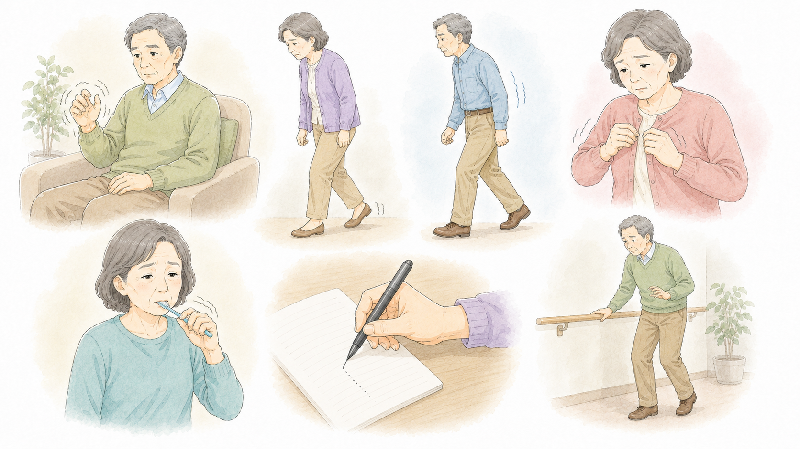
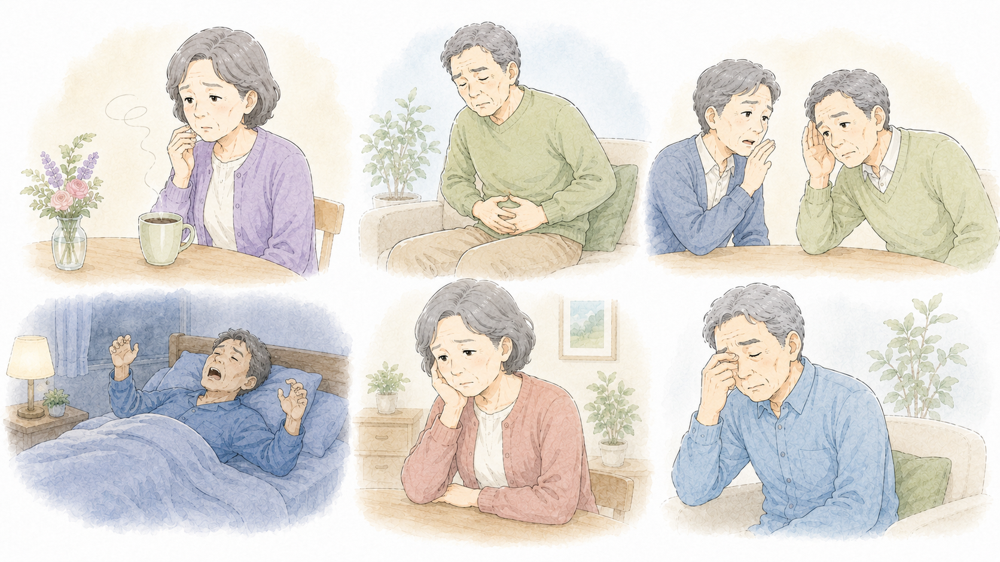
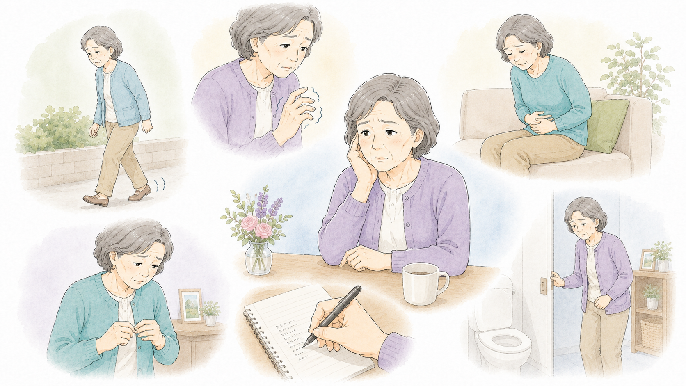

受診を考えるべき
症状について
パーキンソン病は初期症状がゆるやかに現れ、「加齢のせいかな?」と見過ごされることが多いですが、以下のような症状が見られた場合は、早めに神経内科を受診することをおすすめします。
1. 受診を考える
べき運動症状
こんな運動症状はありませんか?

片側の手足の震え(振戦)
じっとしているときに、片側の手や足が震える(安静時(静止時)振戦)。
歩き方が変わる(小刻み歩行・すり足)
歩幅が小さくなり、足をすりながら歩くようになる。
腕の振りが減る
片側の腕の振りが少なくなる(歩行時に腕が自然に振れない)。
動作が遅くなる(寡動)
服のボタンを留める、歯を磨くなどの細かい動作がしづらくなる。
手書きの字が小さくなる(小字症)
以前より字が小さくなり、書き始めよりもどんどん小さくなる。
バランスが悪くなり、転びやすい
つまずく回数が増える、バランスを崩しやすくなる。
2. 受診を考える
べき非運動症状
パーキンソン病は運動症状だけでなく、以下のような非運動症状が先に現れることがあります。
こんな非運動症状はありませんか?

嗅覚の低下
コーヒーやカレーの香りがわかりにくくなる。
頑固な便秘
長期間続く便秘(腸の動きが遅くなるため)。
声が小さくなる
話す声がかすれる、こもる、小さくなる(小声症)。
寝ている間に大声を出したり、手足を動かす
夢を見ている間に体を動かす(レム睡眠行動障害)。
気分の落ち込み・うつ症状
以前より気分が落ち込みやすくなる。
疲れやすさ・倦怠感
充分に休んでも「疲れが取れない」と感じる。
3. どのタイミングで
受診すべき?
以下のようなポイントに当てはまる場合は、神経内科を受診しましょう。
受診を検討すべきタイミング

1つの症状だけでなく、複数の症状がある場合
例:「歩幅が狭くなり、便秘も続いている」
6ヶ月以上続く症状がある場合
例:「手の震えが半年以上続いている」
日常生活や仕事に影響が出始めている場合
例:「ボタンを留めるのが遅くなったり、字が小さくなったりして困る」
4. 何科を受診すれば
いい?
神経内科 / 脳神経内科
神経内科または脳神経内科を受診しましょう。
受診時に伝えるポイント
診察の際には、以下の情報を伝えると診断の助けになります。
いつから症状が出たのか
どのような動作で困るのか(歩行、書字、話すことなど)
片側だけの症状か、両側か
生活にどのような影響が出ているのか
便秘や嗅覚低下など、運動症状以外の変化があるか
5. まとめ

運動症状
- 片側の手足の震え(安静時(静止時)振戦)
- 歩幅が狭くなり、足をすりながら歩く
- 手の振りが少なくなる
- 動作が遅くなり、ぎこちなくなる
- 字が小さくなる(小字症)
- 転びやすくなる
非運動症状
- 嗅覚の低下
- 便秘が続く
- 声が小さくなる
- 夢を見ながら手足を動かす(レム睡眠行動障害)
- 気分の落ち込みや疲れやすさ